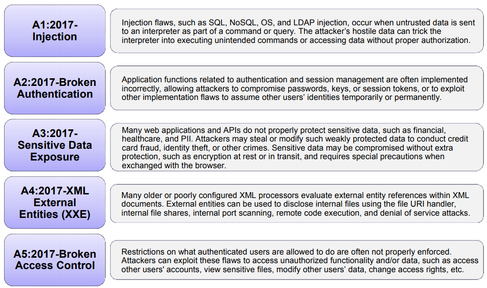

Segurança
além do óbvio
com PHP
Quem sou eu?
- Vinícius Campitelli — vcampitelli.github.io
- Arquiteto na MT4 Tecnologia
- Sócio-fundador no Curseduca
Agenda
- OWASP Top Ten
- Gerenciamento de sessão
- Validação de entradas
- Armazenamento e políticas de senhas
- Enumeração de usuários
- CSRF
- Runtime Application Self-Protection
OWASP Top Ten
OWASP Top Ten
OWASP Top Ten

Gerenciamento de sessão
Codificação
Regerar código da sessão no login e logout da da aplicação
if ($user = $this->loginFrom($_POST)) {
session_start();
session_regenerate_id(true); // true para apagar a sessão antiga
}Por mais que IP e User-Agent possam ser forjados, é uma camada extra de proteção
protected function check() : bool {
if ((empty($_SESSION['ip']))
|| (empty($_SESSION['ua']))
|| ($_SESSION['ip'] !== $_SERVER['REMOTE_ADDR'])
|| ($_SESSION['ua'] !== $_SERVER['HTTP_USER_AGENT'])) {
session_regenerate_id(true);
return false;
}
return true;
}
Configurações
Com Let's Encrypt, podemos ter certificados SSL gratuitos!
Para automatizar o processo, recomendo o acme.sh
session.name="MYSESSNAME"
session.use_only_cookies=On
session.use_strict_mode=On
session.cookie_httponly=On
session.cookie_secure=On
session.cookie_domain="example.com"
session.cookie_samesite="Strict"
session.use_trans_sid=On
session.sid_length=48
session.sid_bits_per_character=6session.name="MYSESSNAME"session.use_only_cookies=Onsession.use_strict_mode=Onsession.cookie_httponly=Onsession.cookie_secure=Onsession.cookie_domain = "example.com"session.cookie_samesite="Lax" or session.cookie_samesite="Strict"session.use_trans_sid=Onsession.sid_length="48"session.sid_bits_per_character="6"Validação de entradas
- Utilize uma biblioteca para filtrar as entradas
-
Mas sempre escape a saída
- Se usar uma ferramenta de templating, verifique sua própria função
- Senão, use:
htmlentities($str, ENT_QUOTES | ENT_HTML5, $encoding)
- Valide os dados de entrada de acordo com o que você espera para aquele campo (data type)
- Exemplo: um nome de uma pessoa pode ter apenas letras, espaços, números, hífen e apóstrofo (não esqueça dos acentos!)
- Crie uma camada em seu framework que irá validar todos os dados da requisição antes de chegar à camada de negócio
- Se um campo não possuir um data type estipulado, remova-o da requisição
-
Você pode optar por duas abordagens
- Sanitizar a entrada e seguir o processamento com o valor limpo; ou
- Parar o processamento com
HTTP 400 Bad Request(recomendado para aplicações críticas)
Referências
Armazenamento e políticas de senhas
Políticas
- Não limite os caracteres permitidos
- Não coloque um tamanho máximo
- O tamanho mínimo varia de acordo com sua aplicação, mas de acordo com o NIST SP800-132, 10 caracteres é o desejável
-
Crie mecanismos de complexidade
Exemplo: ao menos 1 caractere maiúsculo, 1 minúsculo, 1 número e 1 caractere especial
Armazenamento
- Aplique um algoritmo de hash para transformá-la em um texto com tamanho fixo
- Utilize um salt específico para aquela senha
- Criptografe o hash gerado para garantir que você possa recriptografar todas as senhas caso haja vazamento do banco de dados
Referências
Enumeração de usuários
public function login(string $username, string $password) : bool {
$user = $this->findByUsername($username);
if (! $user) {
return false;
}
if (! $this->verifyPassword($password, $user->getPassword())) {
return false;
}
return true;
}public function login(string $username, string $password) : bool {
$storedPassword = $this->generateFakePassword();
$user = $this->findByUsername($username);
if ($user) {
$storedPassword = $user->getPassword();
}
return ($this->verifyPassword($password, $storedPassword))
&& ($user !== null);
}Vamos testar, então!
CSRF
Runtime Application Self-Protection
public function bootstrap() : void {
// Se não for performático sempre, balanceie as validações
if ($this->shouldValidateRASP()) {
$this->validatePhpConfig()
->validateDatabaseConfig()
->validateWebServerConfig()
->validateServerConfig();
}
}